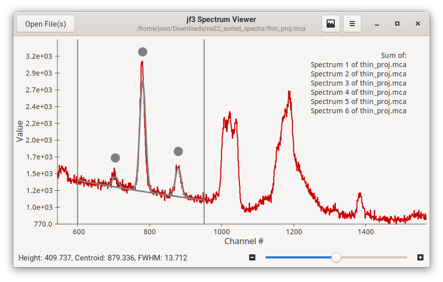

jf3
A simple spectrum viewer in GTK3
GitHub repo

The main jf3 window.
A (1D) spectrum viewer app, with functionality inspired by the gf3 program for gamma-ray spectroscopy in the RadWare software package.
NOTE: This is still in the early stages - spectra are drawing correctly, rudimentary fitting support is in but it is not science ready yet.
Features
Support for various file formats
- .txt - A plaintext file of tab-separated values, where each row repesents a bin/channel and each column represents a spectrum (single column needed for 1 spectrum, 2 columns for 2, etc.).
- .mca - An .mca file is simply a 2D array of integers, with the first index denoting a spectrum number (array length up to 100) and the second index denoting a bin number (array length 32768 ie. 215).
- .fmca - An .fmca file has the same format as .mca except it uses floats rather than integers.
- .spe - Spectrum format used/generated by the RadWare software package, for example when using the 'ws' command in `gf3`.
Some sample files are available here (.zip archive).
Conversion codes for some of these data formats are available in the FileConvTools repository.
Various spectrum display options
- Import spectra from multiple files and plot multiple spectra simultaneously:
- Sum spectra together.
- Overlay spectra, with either common or independent scaling on the y-axis.
- Show spectra in a "stacked" view (tiled vertically with a common x-axis).
- Zoom and pan using the mouse (mouse wheel, click and drag).
Display in linear or logarithmic scale on the y-axis.
- Rebin spectra, with results displayed in real time.
Peak fitting
- Fit multiple Gaussian peak shapes on quadratic background (WIP).
Cool user interface
- Designed to be as simple and intuitive as possible given the supported featureset.
Credits
Developer/Maintainer: Jonathan Williams
This site © 2020 Jonathan Williams, all rights reserved.